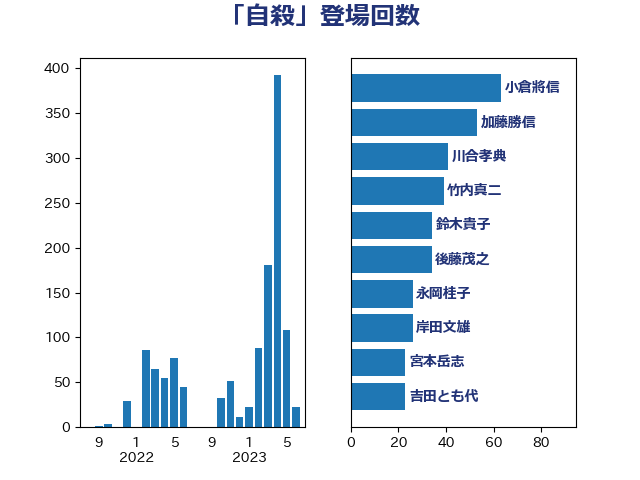

単語「自殺」

| 小倉將信 | 自由民主党 | 63 回 |
| 加藤勝信 | 自由民主党 | 53 回 |
| 川合孝典 | 国民民主党 | 41 回 |
| 竹内真二 | 公明党 | 39 回 |
| 鈴木貴子 | 自由民主党 | 34 回 |
| 後藤茂之 | 自由民主党 | 34 回 |
| 永岡桂子 | 自由民主党 | 26 回 |
| 岸田文雄 | 自由民主党 | 26 回 |
| 宮本岳志 | 日本共産党 | 23 回 |
| 吉田とも代 | 日本維新の会 | 23 回 |
| 伊藤孝恵 | 国民民主党 | 21 回 |
| 山田太郎 | 自由民主党 | 17 回 |
| 山井和則 | 立憲民主党 | 16 回 |
| 小林茂樹 | 自由民主党 | 16 回 |
| 梅村みずほ | 日本維新の会 | 14 回 |
| 末松信介 | 自由民主党 | 14 回 |
| 阿部司 | 日本維新の会 | 13 回 |
| 田村智子 | 日本共産党 | 12 回 |
| 川田龍平 | 立憲民主党 | 12 回 |
| 仁比聡平 | 日本共産党 | 12 回 |
| 野田聖子 | 自由民主党 | 11 回 |
| 中川宏昌 | 公明党 | 11 回 |
| 鰐淵洋子 | 公明党 | 10 回 |
| 掘井健智 | 日本維新の会 | 10 回 |
| 高木かおり | 日本維新の会 | 9 回 |
| 深澤陽一 | 自由民主党 | 9 回 |
| 櫻井周 | 立憲民主党 | 9 回 |
| 柴田巧 | 日本維新の会 | 9 回 |
| 柚木道義 | 立憲民主党 | 9 回 |
| 市村浩一郎 | 日本維新の会 | 9 回 |
| 塩村あやか | 立憲民主党 | 9 回 |
| 石川大我 | 立憲民主党 | 8 回 |
| あべ俊子 | 自由民主党 | 8 回 |
| 穂坂泰 | 自由民主党 | 7 回 |
| 牧山ひろえ | 立憲民主党 | 7 回 |
| 塩川鉄也 | 日本共産党 | 7 回 |
| 上月良祐 | 自由民主党 | 7 回 |
| 三上えり | 立憲民主党 | 7 回 |
| 舩後靖彦 | れいわ新選組 | 6 回 |
| 古賀友一郎 | 自由民主党 | 6 回 |
| 鎌田さゆり | 立憲民主党 | 5 回 |
| 自見はなこ | 自由民主党 | 5 回 |
| 櫛渕万里 | れいわ新選組 | 5 回 |
| 森山浩行 | 立憲民主党 | 5 回 |
| 太栄志 | 立憲民主党 | 5 回 |
| 堀場幸子 | 日本維新の会 | 5 回 |
| 國重徹 | 公明党 | 5 回 |
| 階猛 | 立憲民主党 | 4 回 |
| 阿部弘樹 | 日本維新の会 | 4 回 |
| 谷合正明 | 公明党 | 4 回 |
| 西岡秀子 | 国民民主党 | 4 回 |
| 米山隆一 | 立憲民主党 | 4 回 |
| 福島みずほ | 社会民主党 | 4 回 |
| 福山哲郎 | 立憲民主党 | 4 回 |
| 牧原秀樹 | 自由民主党 | 4 回 |
| 早稲田ゆき | 立憲民主党 | 4 回 |
| 打越さく良 | 立憲民主党 | 4 回 |
| 岩渕友 | 日本共産党 | 4 回 |
| 山本太郎 | れいわ新選組 | 4 回 |
| 中谷一馬 | 立憲民主党 | 4 回 |
| 青柳陽一郎 | 立憲民主党 | 3 回 |
| 鈴木義弘 | 国民民主党 | 3 回 |
| 鈴木宗男 | 日本維新の会 | 3 回 |
| 西村智奈美 | 立憲民主党 | 3 回 |
| 緒方林太郎 | 無所属 | 3 回 |
| 田中英之 | 自由民主党 | 3 回 |
| 浅野哲 | 国民民主党 | 3 回 |
| 松野明美 | 日本維新の会 | 3 回 |
| 木村英子 | れいわ新選組 | 3 回 |
| 小沼巧 | 立憲民主党 | 3 回 |
| 勝部賢志 | 立憲民主党 | 3 回 |
| 高木真理 | 立憲民主党 | 2 回 |
| 長妻昭 | 立憲民主党 | 2 回 |
| 藤岡隆雄 | 立憲民主党 | 2 回 |
| 石橋林太郎 | 自由民主党 | 2 回 |
| 石井啓一 | 公明党 | 2 回 |
| 田名部匡代 | 立憲民主党 | 2 回 |
| 池田佳隆 | 自由民主党 | 2 回 |
| 斎藤アレックス | 国民民主党 | 2 回 |
| 岬麻紀 | 日本維新の会 | 2 回 |
| 山添拓 | 日本共産党 | 2 回 |
| 山下雄平 | 自由民主党 | 2 回 |
| 小沢雅仁 | 立憲民主党 | 2 回 |
| 守島正 | 日本維新の会 | 2 回 |
| 塩田博昭 | 公明党 | 2 回 |
| 嘉田由紀子 | 無所属 | 2 回 |
| 和田義明 | 自由民主党 | 2 回 |
| 古賀篤 | 自由民主党 | 2 回 |
| 加田裕之 | 自由民主党 | 2 回 |
| 倉林明子 | 日本共産党 | 2 回 |
| 伊佐進一 | 公明党 | 2 回 |
| 中曽根康隆 | 自由民主党 | 2 回 |
| 上田清司 | 国民民主党 | 2 回 |
| 一谷勇一郎 | 日本維新の会 | 2 回 |
| 齋藤健 | 自由民主党 | 1 回 |
| 高階恵美子 | 自由民主党 | 1 回 |
| 馬場雄基 | 立憲民主党 | 1 回 |
| 鈴木俊一 | 自由民主党 | 1 回 |
| 近藤昭一 | 立憲民主党 | 1 回 |
| 辻元清美 | 立憲民主党 | 1 回 |
| 西田実仁 | 公明党 | 1 回 |
| 菊田真紀子 | 立憲民主党 | 1 回 |
| 菅義偉 | 自由民主党 | 1 回 |
| 荒井優 | 立憲民主党 | 1 回 |
| 芳賀道也 | 国民民主党 | 1 回 |
| 羽田次郎 | 立憲民主党 | 1 回 |
| 羽生田俊 | 自由民主党 | 1 回 |
| 笠浩史 | 無所属 | 1 回 |
| 窪田哲也 | 公明党 | 1 回 |
| 稲富修二 | 立憲民主党 | 1 回 |
| 石橋通宏 | 立憲民主党 | 1 回 |
| 石原宏高 | 自由民主党 | 1 回 |
| 石井苗子 | 日本維新の会 | 1 回 |
| 畦元将吾 | 自由民主党 | 1 回 |
| 渡辺博道 | 自由民主党 | 1 回 |
| 水野素子 | 立憲民主党 | 1 回 |
| 森本真治 | 立憲民主党 | 1 回 |
| 梅谷守 | 立憲民主党 | 1 回 |
| 柴愼一 | 立憲民主党 | 1 回 |
| 木原稔 | 自由民主党 | 1 回 |
| 岡本あき子 | 立憲民主党 | 1 回 |
| 山田宏 | 自由民主党 | 1 回 |
| 山田勝彦 | 立憲民主党 | 1 回 |
| 山本左近 | 自由民主党 | 1 回 |
| 山本博司 | 公明党 | 1 回 |
| 山本剛正 | 日本維新の会 | 1 回 |
| 山崎正恭 | 公明党 | 1 回 |
| 山口那津男 | 公明党 | 1 回 |
| 小池晃 | 日本共産党 | 1 回 |
| 小川淳也 | 立憲民主党 | 1 回 |
| 宮本徹 | 日本共産党 | 1 回 |
| 宮内秀樹 | 自由民主党 | 1 回 |
| 天畠大輔 | れいわ新選組 | 1 回 |
| 大西健介 | 立憲民主党 | 1 回 |
| 大石あきこ | れいわ新選組 | 1 回 |
| 大島九州男 | れいわ新選組 | 1 回 |
| 大家敏志 | 自由民主党 | 1 回 |
| 城井崇 | 立憲民主党 | 1 回 |
| 吉田はるみ | 立憲民主党 | 1 回 |
| 佐々木さやか | 公明党 | 1 回 |
| 伊藤孝江 | 公明党 | 1 回 |
| 仁木博文 | 無所属 | 1 回 |
| 串田誠一 | 日本維新の会 | 1 回 |
| 中野洋昌 | 公明党 | 1 回 |
| 三浦信祐 | 公明党 | 1 回 |
| おおつき紅葉 | 立憲民主党 | 1 回 |